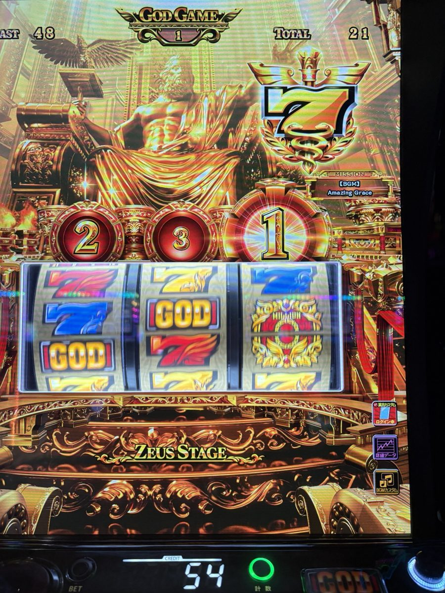
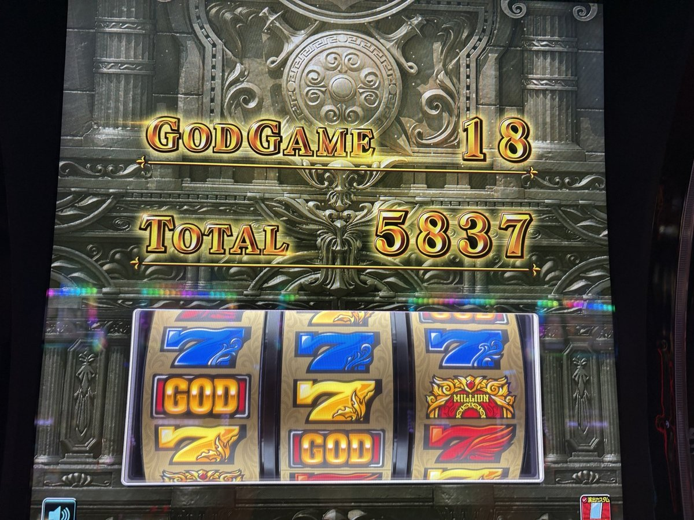
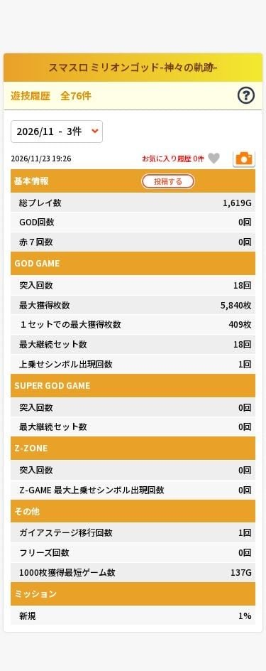

機種別実戦記録
久々に軌跡でヤレた！ トイレから戻ったらアメグレ、結果は18連
2026年11月23日の神々の軌跡実戦。投資200枚・回収5,200枚で＋5,000枚。ゼウスステージでのアメグレと18連を写真で振り返ります。
200枚投資から18連、回収5,200枚
久々に軌跡でヤレた！ 2026年11月23日の「スマスロ ミリオンゴッド‐神々の軌跡‐」は、ゼウスステージでのアメグレを経て18連。最高枚数から少し使ったところでヤメ、収支は＋5,000枚でした。
| 項目 | 記録 |
|---|---|
| 投資（本人申告） | 200枚 |
| 回収（本人申告） | 5,200枚 |
| 機種区間の収支 | ＋5,000枚（5,200−200） |
回収枚数は本人申告。GG終了画面のTOTALや、遊技履歴の最大獲得枚数とは別の数字です。
トイレから戻ったら、アメグレが流れていた！
本人の実戦メモでは、天国と見ていたところから中段青7でヒット。ゼウスステージへ移行した後にトイレ休憩を挟み、戻ってきたらアメグレが流れていたそうです。移行直後には鳴っていなかった、という驚きが今回の見どころです。

タップして拡大 ↗結果は18連。終了画面のTOTALは5,837
残りのセット数を意識しながら消化し、結果的に18連。本人は有利区間を切れたと判断していますが、切断そのものを示すシステム記録は確認していません。

タップして拡大 ↗最高枚数から少し使ってヤメ。本人の機種別回収は5,200枚でした。
「あと5セットあれば」と考えながら消化
本人は、着席前に既に約5,700枚出ていたことから、約4,800枚で一度有利区間を切っているのでは、と推測。次の区切りまで約3,200枚、アメグレから約1,750枚は出そうだから、残り約1,450枚、あと5セットあれば……と計算していました。
この数字は当時の本人の読みです。前任者分の正確な収支、有利区間の開始・切断地点、残りストック数を確定したものではありません。コメント中の「確実に切れる」「見事に切れて」も本人の認識であり、同じ条件での到達や獲得枚数を保証する解析情報ではありません。
遊技履歴に残った記録
| 項目 | 記録 |
|---|---|
| 総プレイ数 | 1,619G |
| GOD GAME突入回数（履歴表示） | 18回 |
| GOD GAME最大継続セット数 | 18回 |
| 最大獲得枚数（履歴表示） | 5,840枚 |
| 1セットでの最大獲得枚数 | 409枚 |
| 上乗せシンボル出現回数 | 1回 |
| GOD回数／赤7回数 | 各0回 |
| ガイアステージ移行回数 | 1回 |

タップして拡大 ↗以下の本人コメントにある残り枚数の計算や有利区間の切断判断は、当時の推測です。確定した切断実績や獲得枚数の保証ではありません。
記録の範囲と確認元
実戦日・投資・回収・当選時の状況・休憩中の出来事は本人申告。画面表示は本人撮影の写真と提供された遊技履歴によります。設定や天国滞在、有利区間切断の確定根拠を追加した記事ではありません。